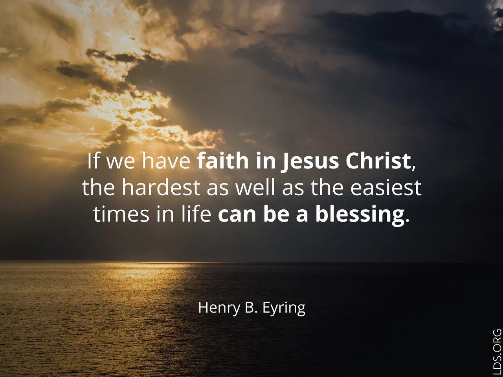

What is Faith?

Faith in Jesus Christ means trusting Him, believing in His teachings, and following His example. It is more than just passive belief; it is shown by the way we live and the choices we make each day[1][2][3].
When we have faith, we act with hope and confidence, even when things are hard or uncertain. Faith is the first principle of the gospel and the foundation of all other principles[5][6].
“And now as I said concerning faith—faith is not to have a perfect knowledge of things; therefore if ye have faith ye hope for things which are not seen, which are true.”
—
Through faith, we can find peace, strength, and the courage to do good. Faith in Jesus Christ leads us to act, to repent, and to become more like Him every day[1][2][4][5].